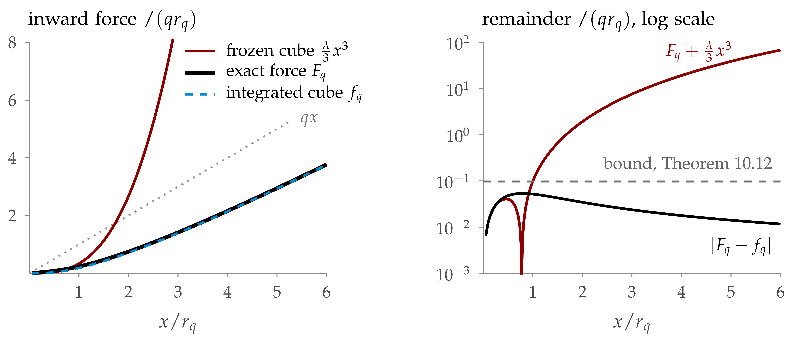
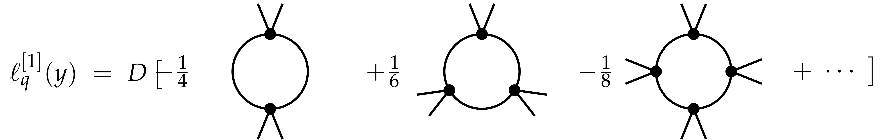
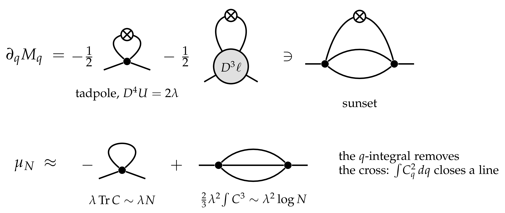
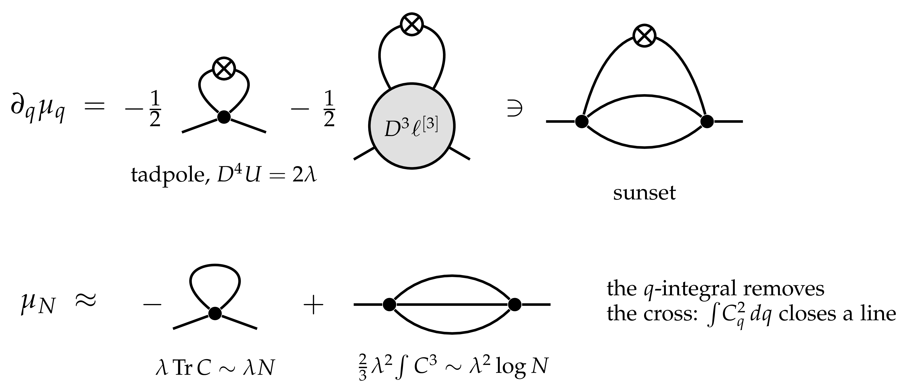

|
Abstract
The last two lectures construct the massive \(\Phi^4_3\) measure on the three-dimensional torus with the forward–backward equations of Lecture 4. In this lecture we set up the problem. For the mass regulator the Polchinski process of Lecture 4 is a noisy observation of the terminal field, and its forecast is the posterior mean; this gives an exact FBSDE at every lattice cutoff. Its backward half is the force equation of Lecture 4 in the forecast coordinate. We cannot solve that equation, so we construct an explicit approximate force and write the exact FBSDE in the coordinates it defines: the approximate forecast \(Y\) and the error \(Z\). The error is driven only by the failure of the approximate force to solve it. We explain why the approximate force needs two renormalisations, in two senses: a linearly and a logarithmically divergent mass counterterm, and two correction steps beyond one loop, which make the defect integrable in the backward equation. Finally we identify the large-field problem: the construction only controls fields of size \(r_q = (q / \lambda)^{1 / 2}\), and must be extended to all fields without losing coercivity. The price is an error that is not small but lives on large fields. Lecture 7 controls it by a priori estimates on the FBSDE and removes the cutoffs.
The results presented in Lectures 4–7 were obtained recently, with the use of AI, in collaboration with Sarah-Jean Meyer.
Introduction 2
10The problem and the exact FBSDE 3
10.1Lattice, scales and notation 3
The resolution parameter 3
10.2The cutoff measure and the goal 4
10.3The Polchinski process as a filter 5
10.4The exact force in the forecast coordinate 6
10.5Approximate forecast and error 6
10.6Why the Polchinski expansion is not enough 8
The exact force is linear at large fields 9
The field equation does not see the cube 10
What clipping does to the Burgers equation 10
Integrating the cube 11
Exercises 13
11Renormalisation: why two of them 14
What must be approximated 14
Why we project 14
11.1Scales and power counting 15
The basic loop estimate 15
11.2The seed: one loop 16
11.3Corrections and the mass 17
Splitting the force equation 17
The iteration as Picard steps 18
Why the first spatial moment is the right quantity 18
The resolvent receives the cancellation 19
From the free resolvent to the loop response 19
Why the centred source is integrable 19
The vertex pays for the spatial moment 20
Integrating from infinity 20
Computing the first correction 20
Computing the second correction 21
Following a spatial distance through a loop 21
Weighted comparisons and the scale integral 22
The four-leg bound after two steps 22
The scalar mass 23
Why we stop at the second correction 23
Closing the mass path 24
Two nonlinear steps, one scalar fixed point 24
Where the small factor comes from 25
Integrating and normalising the differences 25
Why the outer contraction loses no more derivatives 26
11.4Two mass renormalisations 27
11.5Two correction steps 28
11.6The explicit counterterm 29
Exercises 30
12The flow at large fields 30
12.1The large-field problem 30
A scalar model 30
12.2Clipping 31
12.3The complete defect 31
Where the large-field error comes from 32
The coordinate correction 32
12.4The force below the auxiliary scale 32
Exercises 33
References 33
Lecture 4 formulated a programme ((7.7) and Figure 7.1): solve the FBSDE
with a renormalised interaction \(V_T\), with estimates uniform in the ultraviolet cutoff, and take the limit. For \(\Phi^4_3\) the force \(F_t\) is not expected to converge to an integrable terminal value, and the naive estimates of the force diverge (Appendix A.2 of Lecture 5). In these two lectures we carry out a version of the programme on the unit torus \(\mathbb{T}^3\). The guiding principle is the one of Section 8: do not estimate \(\Phi\) and \(F\) directly, but pass to the forecast coordinate, in which the forward equation has no drift and the tree diagrams have been integrated exactly. Section 10.6 shows on one site what goes wrong with a frozen cube, and what integrating it gives: this motivates the form of the approximate force.
The plan. Figure 10.1 gives the plan: this lecture builds the approximate force \(\bar{\mathcal{F}}\); Lecture 7 does the estimates and the limits. The emphasis is on the structure of the argument. We give complete proofs of the identities and of the scalar models of the estimates, and only describe the tensor estimates on the lattice. The point of view is that of [BCG26]; for other constructions of \(\Phi^4_3\) see [GJ73, FO76, BFS83, BG20, GH21].
What is proved. Theorem 10.2 holds for every coupling, every reference mass \(q_0 > 0\) and every finite part \(r\) of the counterterm, on a fixed torus, with no smallness, and for an explicit counterterm whose finite part is arbitrary. Section 18.7 lists what is not proved. Detailed proofs of what these lectures cite or condense are in the Supplement.
The reference mass. The number \(q_0 > 0\) is not an
additional regulator: it is the squared mass \(m^2 = q_0\) of the
Gaussian reference \(C = C_{q_0} = (q_0 - \Delta_N)^{- 1}\). It must be
positive even on the torus, where there is no infrared problem at large
distances, because the constants are in the kernel of \(- \Delta_N\), so
that \((- \Delta_N)^{- 1}\) does not exist. The counterterm cannot
supply this positivity, since its finite part \(r\) is an arbitrary real
number, negative values included. The measure \(\nu_N\) depends on
\(q_0\) and \(\mu_N\) only through \(q_0 + \mu_N\), so the two
parameters are redundant: one may fix \(q_0\) once and for all, for
instance \(q_0 = 1\), and let \(r\) be the free mass parameter. The
number \(q_0\) is also where the scale starts: the Polchinski process
runs over \(q \in [q_0, \infty)\) and vanishes at \(q = q_0\) (see
One auxiliary scale. The expansion of the force needs \(g_q\) small, and this happens above an auxiliary scale \(q_{\ast} \geqslant 1\), depending on \(\lambda\), \(q_0\) and on the finite part. Below it the coefficients are frozen (Section 12.4), so the force, the system and the results hold at all scales, and no statement about \(\nu\) depends on it.
Acknowledgements. The results presented in Lectures 4–7 are joint work with Sarah-Jean Meyer, obtained recently with the use of AI. M. Gubinelli is partly supported by UK Research and Innovation via the grant “StochFields” EP/Z534328/1 and by the Simons Collaboration on Probabilistic Paths to QFT. S.-J. Meyer is supported by the grant “StochFields” EP/Z534328/1.
Let \(N\) be an odd integer and \(\Lambda_N = (N^{- 1} \mathbb{Z}/\mathbb{Z})^3\) the periodic lattice of mesh \(N^{- 1}\) in the unit torus. Let \(H_N =\mathbb{R}^{\Lambda_N}\) with
so that the volume is \(1\) and integrals approximate continuum integrals. The nearest-neighbour Laplacian is \(\Delta_N u (x) = N^2 \sum_{i = 1}^3 [u (x + e_i / N) + u (x - e_i / N) - 2 u (x)]\); we usually drop the index \(N\). A kernel \(C (x, z)\) acts by
so the identity has kernel \(N^3 \mathbb{1}_{x = z}\), and
The row norm \(\|C\|_{\text{row}}\) is the largest \(L^1\) norm of a row of the kernel. It bounds the operator norm on \(L^{\infty}\), and for a symmetric kernel on every \(L^p\), \(1 \leqslant p \leqslant \infty\), by interpolation: \(\|C\|_{p \to p} \leqslant \|C\|_{\text{row}}\). \(M_f\) is multiplication by \(f\), and \(K + \lambda y^2\) means \(K + \lambda M_{y^2}\). For a functional \(F\) on \(H_N\), \(DF\), \(D^2 F\), \(D^k F\) are its gradient and derivatives, as in Lecture 3. \(\|u\|_p\) is the \(L^p\) norm for the measure \(\int\).
It is convenient to parametrise the resolution by the squared regulator mass
Set
| \(\displaystyle K_q := q - \Delta_N, \qquad C_q := K_q^{- 1}, \qquad C := C_{q_0} = (m^2 - \Delta_N)^{- 1} .\) | (10.1) |
In the notation of Lectures 3–4, with \(T = \infty\) and using \(q\) instead of \(t\) as the resolution variable (so \(\dot{Q}\) now means \(\partial_q Q_q\)),
| \(\displaystyle Q_q = C - C_q, \qquad \partial_q Q_q = C_q^2, \qquad \dot{Q}^{1 / 2} = C_q, \qquad S_q = C_q, \qquad \mathcal{R}_q = q - q_0, \qquad \partial_q \mathcal{R}_q = 1.\) | (10.2) |
So \(C_q\) is the covariance of the scales not yet resolved, and \(K_q = S_q^{- 1}\) is the precision of the posterior at resolution \(q\) under the free prior \(\mu^C\). The main properties of \(C_q\) are elementary.
Lemma
| \(\displaystyle C_q \mathbb{1} = q^{- 1} \mathbb{1}, \qquad \|C_q \|_{p \to p} = q^{- 1} \text{for $1 \leqslant p \leqslant \infty$,} \) | (10.3) |
and
| \(\displaystyle a_2 (q) := (C_q^2) (x, x) = \text{Tr} C_q^2 \lesssim q^{- 1 / 2} \wedge N^3 q^{- 2}, \qquad \text{Tr} C_q \lesssim N \wedge N^3 q^{- 1} .\) | (10.4) |
For \(y \in H_N\) and \(\lambda > 0\), the killed resolvent
satisfies
Proof. \(C_q = \int_0^{\infty} \mathrm{e}^{- qs} \mathrm{e}^{s \Delta} \mathrm{d} s\) and \(\mathrm{e}^{s \Delta}\) is the transition kernel of the lattice random walk. This gives positivity and the row sums. Killing the walk at rate \(\lambda y^2\) gives the comparison for \(G_q\). The symbol of \(- \Delta_N\) is comparable to \(|k|^2\) on the centred frequency cube \(n \in \{- \frac{N - 1}{2}, \ldots, \frac{N - 1}{2} \}^3\) (symbol \(4 N^2 \sum_i \sin^2 (\pi n_i / N)\), with \(k = 2 \pi n\)), and
Counting the \(N^3\) modes gives the other bounds.\(\Box\)
The bubble \(a_2 (q)\) is the coincident-point variance of the shell at resolution \(q\):
for the free field at resolution \(q\), and
is the divergent variance of the lattice field.
Fix \(\lambda > 0\). The interaction and the lattice measure are
where \(\mu^C\) is the centred Gaussian measure with covariance \(C = C_{q_0}\) on \(H_N\), and \(\mu_N \in \mathbb{R}\) is a mass counterterm to be chosen. With this normalisation \(D^2 U (y) = \lambda M_{y^2}\): the coupling is the curvature of the interaction, which is why we write \(\lambda / 12\). In Lecture 4 we wrote the interaction as
the coupling is the same, and the Wick ordering is now part of \(\mu_N\). For every real \(\mu_N\), \(\nu_N\) is a probability measure with all moments, since the quartic term dominates.
Theorem
Then:
the laws \(\nu_N\), embedded in \(H^{- s} (\mathbb{T}^3)\), \(s > \frac{1}{2}\), converge along the whole sequence to a measure \(\nu\), and \(\nu\) is an explicit density over the explicit flow from \(Y_{q_0} = 0\) (Theorem 18.5);
the forecast processes converge in law, along the whole sequence, tested at each scale and jointly with the terminal field, to a solution of a forward–backward system on \([q_0, \infty)\), \(Y_{q_0} = 0\), driven by a cylindrical Brownian motion, whose terminal value has the law \(\nu\); the forecast is \(\psi_q = m_q (\Phi_q)\) with \(m_q\) continuous (Theorem 18.6);
\(\nu\) has a renormalised variational formula (Theorem 18.12), and it satisfies the integration by parts formula of Theorem 18.8, in which the renormalised cube appears only tested in expectation, and it has quartic exponential tails for tested fields.
The bounds that prove (a) and (b) are uniform in \(N\): this is UV stability. They are bounds on the error \(Z\) of an approximate forecast, defined below. We now set up the exact FBSDE at fixed \(N\).
At fixed \(N\) everything in Sections 7–8 of Lecture 4 is a theorem. We need it in the profile (10.2), where the regulator is \(q - q_0\) and the terminal resolution \(q = \infty\).
Proposition
| \(\displaystyle \mathrm{d} \Phi_q = C_q^2 F_q \hspace{0.17em} \mathrm{d} q + C_q \hspace{0.17em} \mathrm{d} W_q, \qquad F_q =\mathbb{E}_q [- DV_N (\Phi_{\infty})], \) | (10.6) |
where \(W\) is a Brownian motion on \(H_N\), \(\mathbb{E}_q\) is the conditional expectation given \(\mathcal{F}_q = \sigma (\Phi_s : s \leqslant q)\), and \(\Phi_q \to \Phi_{\infty} \sim \nu_N\) as \(q \to \infty\) (by (10.7) below; see the proof of Lemma 16.1).
Proposition
the Polchinski process is a noisy observation of the terminal field: there is a Brownian motion \(B\) on \(H_N\), independent of \(\Phi_{\infty}\), with
| \(\displaystyle \Phi_q = (q - q_0) C_q \Phi_{\infty} + C_q B_{q - q_0} ; \) | (10.7) |
the forecast \(\psi_q =\mathbb{E}_q \Phi_{\infty} = \Phi_q + C_q F_q\) is a smooth function of \(\Phi_q\), \(\psi_q = m_q (\Phi_q)\), with \(Dm_q = \text{Cov}_q K_q\) invertible, where \(\text{Cov}_q = \text{Cov} (\Phi_{\infty} |\mathcal{F}_q) > 0\);
\(W\) is the innovation of the filter, and
| \(\displaystyle \mathrm{d} \psi_q = \text{Cov}_q \hspace{0.17em} \mathrm{d} W_q . \) | (10.8) |
Proof. In this profile \(J_q = (q - q_0) C_q\) and \(S_q = C_q\), so (a) is the bridge (7.14) and (c) the filter equation of Lecture 4. For (b), the conditional law of \(\Phi_{\infty}\) is \(\nu_N\) tilted by \(\exp (\langle K_q \Phi_q, \varphi \rangle - \frac{q - q_0}{2} \| \varphi \|_2^2)\) by (7.16): an exponential family in \(K_q \Phi_q\), whose mean has derivative the covariance.\(\Box\)
The noise of the forecast is the conditional expectation of the bridge noise: taking \(\mathbb{E}_q\) in (10.7),
a function of the field, \(\omega_q = \omega_q (\Phi_q)\) with \(\omega_q (x) = K_q x - (q - q_0) m_q (x)\). It is the noise of the field equation of Lecture 5 in this profile, and it is sub-Gaussian whatever the interaction (Proposition 9.6 of Lecture 5, Lemma 13.2 of Lecture 7).
By Proposition 10.4(b) the map \(\Phi_q \mapsto \psi_q\) is invertible, and we define the exact force in the forecast coordinate \(\mathcal{F}_q\) (not to be confused with the filtration) by
| \(\displaystyle \Phi_q = \psi_q + C_q \mathcal{F}_q (\psi_q), \quad \text{i.e.} \quad K_q \Phi_q = K_q \psi_q +\mathcal{F}_q (\psi_q) . \) | (10.9) |
So \(F_q = -\mathcal{F}_q (\psi_q)\), the force of Theorem 8.2 of Lecture 4, and the second form is the field equation in the forecast coordinate. We write \(\text{Ctr}_E T\) for the contraction of two slots of a tensor \(T\) with a kernel \(E\), and \(H_q^{\text{ex}} (y) = (K_q + D\mathcal{F}_q (y))^{- 1}\).
Proposition
Proof. Differentiating (10.9) in \(\psi\) and using \(Dm_q = \text{Cov}_q K_q\) gives \(K_q + D\mathcal{F}_q (\psi_q) = \text{Cov}_q^{- 1}\). Apply Itô's formula to \(\Phi_q = \psi_q + C_q \mathcal{F}_q (\psi_q)\) with (10.6), (10.8) and \(\mathrm{d} C_q = - C_q^2 \hspace{0.17em} \mathrm{d} q\): the martingale parts agree, and the drifts differ by \(C_q\) times the left side of (10.10). At fixed \(N\) the forecast has full support, so this holds for all \(y\).\(\Box\)
This is the derivative of the Wetterich equation of Lecture 4 (Exercise 10.1). It is an identity about the unknown \(\nu_N\), not a construction. But since
an approximate force gives approximate forecast coordinates, with an error governed by how badly it fails to solve (10.10).
Let \(\bar{\mathcal{F}}_q\) be, for \(q \geqslant q_0\), an odd map on \(H_N\), continuous and piecewise smooth in \(q\) and \(y\), with \(D \bar{\mathcal{F}}_q\) symmetric and \(K_q + D \bar{\mathcal{F}}_q \geqslant \bar{c}_q I\) with \(\bar{c}_q > 0\). Define the approximate response, the force defect and its drift
| \(\displaystyle \mathcal{D}_q (y) : = \partial_q \bar{\mathcal{F}}_q (y) + \frac{1}{2} \text{Ctr}_{H_q (y)^2} D^2 \bar{\mathcal{F}}_q (y), \quad b_q (y) : = - H_q (y) \mathcal{D}_q (y) . \) | (10.11) |
The defect is the failure of \(\bar{\mathcal{F}}\) to solve (10.10). The map \(y \mapsto y + C_q \bar{\mathcal{F}}_q (y)\) is a bijection of \(H_N\). Define the approximate forecast and the error by
| \(\displaystyle Y_q + C_q \bar{\mathcal{F}}_q (Y_q) = \Phi_q, \quad Z_q : = \psi_q - Y_q, \quad \Xi_q : = \text{Cov}_q - H_q (Y_q) . \) | (10.12) |
Equivalently \(Y_q\) solves the approximate coordinate equation
which is (10.9) with \(\bar{\mathcal{F}}\) in place of \(\mathcal{F}\). If \(\bar{\mathcal{F}} =\mathcal{F}\) then \(Y = \psi\), \(Z = 0\), \(\mathcal{D}= 0\) and \(b = 0\).
Theorem
for \(q \geqslant q_0\), and \(Y + Z = \psi\) is the martingale \(\int \text{Cov} \hspace{0.17em} \mathrm{d} W\).
Proof. \(Y_q\) is a smooth function of \((q, \Phi_q)\), so it is an Itô process, \(\mathrm{d} Y = \beta \hspace{0.17em} \mathrm{d} q + A \hspace{0.17em} \mathrm{d} W\). Apply Itô's formula to \(Y_q + C_q \bar{\mathcal{F}}_q (Y_q) = \Phi_q\), with (10.6) and \(\mathrm{d} C_q = - C_q^2 \hspace{0.17em} \mathrm{d} q\), and multiply by \(K_q\): the martingale parts give \((K + D \bar{\mathcal{F}}) A = I\), so \(A = H\), and the drifts give
since \(CF = \psi - \Phi\) and \(C \bar{\mathcal{F}} (Y) = \Phi - Y\). Hence \(\beta = H (\psi - Y -\mathcal{D}) = HZ + b\), which is the first equation. The second is \(\mathrm{d} Z = \mathrm{d} \psi - \mathrm{d} Y\) and (10.8). The computation uses no initial value. At the reference scale \(\Phi_{q_0} = 0\), so \(Y_{q_0} = 0\) by oddness.\(\Box\)
Remark.
Coercivity makes \(\mathcal{W}_q\) strictly convex, and the coordinate equation is \(j_q = D\mathcal{W}_q (Y_q)\), or \(Y_q = D\mathcal{W}_q^{\ast} (j_q)\), where \(\mathcal{W}_q^{\ast}\) is the Legendre transform. At fixed \(q\), regard \(j, \psi\) as conjugate variables and put \(P = H_q (Y)^{- 1} Z\). Then
Here the differentials are in phase space, with the scale held fixed. Thus \((j, \psi) \mapsto (Y, P)\) is canonical; its type-two generating function is
The primitive of \(\bar{\mathcal{F}}\), together with the Gaussian quadratic term, therefore determines the canonical change. The conjugate momentum is \(P = H^{- 1} Z\), rather than \(Z\) itself. For \(\bar{\mathcal{F}} = 0\) one has \(Y = \Phi\), \(H = C\) and \(Z = CF\): the forward equation is the Polchinski equation. For \(\bar{\mathcal{F}} =\mathcal{F}= D \Gamma\) one has \(Y = \psi\) and \(Z = P = 0\): the prediction field is a martingale with the exact Wetterich response. Intermediate choices are equally valid; for example \(\bar{\Gamma} = \theta \Gamma\), \(0 \leqslant \theta \leqslant 1\), preserves coercivity since \(K + \theta D^2 \Gamma = (1 - \theta) K + \theta (K + D^2 \Gamma) > 0\). Moreover,
The defect measures the failure of the chosen potential to solve Wetterich's equation, up to a field-independent normalisation. The error also depends on terminal data: the zero choice has zero defect but generally nonzero \(Z\), and need not satisfy the stronger terminal matching used below.
UV stability means that the explicit force \(\bar{\mathcal{F}}\) computes the forecast up to an error \(Z\) which is small uniformly in \(N\).
For this we need: (i) a force defect \(\mathcal{D}\) integrable against the backward propagator, which is a deterministic renormalisation problem (Section 11); (ii) global coercivity of \(\bar{\mathcal{F}}\), so that \(H_q (y)\) is a good noise coefficient for all fields (Section 12); (iii) a priori estimates for the coupled system (Lecture 7). Figure 10.1 summarises the logic of the two lectures.
Before building the approximate force, we test on one site why it is written in the forecast coordinate. Lecture 4 gives two exact descriptions of the flow: the Burgers equation for the force \(F\) at the field \(\Phi\), and the force equation at the forecast \(\psi\). We use the second, here and in Lecture 7. The first looks more economical, and the following programme is natural:
Keep the bare cube \(- \frac{\lambda}{3} \varphi^3\) unclipped, so that the approximate force stays coercive at all fields.
Expand the rest of the force in perturbation theory and clip only these higher orders.
Pay for the clipping in the source of the equation for the remainder \(R = F - f\), using the a priori estimates.
No change of coordinates would be needed.
Here we test the programme where everything can be computed: on one site. There is no spatial structure and no renormalisation, so whatever goes wrong has nothing to do with divergences.
Conventions. As in Exercise 10.4: \(N = 1\), \(\Delta = 0\), \(K_q = q\), \(V (\varphi) = \frac{\lambda}{12} \varphi^4\) and \(r_q = (q / \lambda)^{1 / 2}\). We write \(S = C_q = 1 / q\) for the remaining covariance, and \(x\) for the value of the field at resolution \(q\).
where \(\mathbb{E}_x\) is the expectation for the probability density proportional to \(\mathrm{e}^{- \frac{\lambda}{12} y^4 - \frac{q}{2} (y - x)^2}\). It solves the Burgers equation
| \(\displaystyle \partial_q F + \frac{1}{2} S^2 F\prime\prime + S^2 FF\prime = 0. \) | (10.14) |
Let \(m_q (x) =\mathbb{E}_x Y\). Integrating by parts in \(y\) gives
| \(\displaystyle F_q (x) = - \frac{\lambda}{3} \mathbb{E}_x Y^3 = q (m_q (x) - x) . \) | (10.15) |
This is Proposition 10.4(b): the posterior mean is the forecast, \(\psi_q = m_q (\Phi_q)\). So \(F_q\) measures how far the forecast lies behind the field.
Lemma
Proof. Integrating the derivative of \(y\) times the density gives
With \(M = (\mathbb{E}_x Y^4)^{1 / 4}\) this gives
and Young's inequality gives
Finally \(|m_q | \leqslant M\).\(\Box\)
Therefore, by (10.15), the two regimes of the force are
| \(\displaystyle F_q (x) \to - \frac{\lambda}{3} x^3 \quad (\text{fixed } x, q \to \infty), \quad F_q (x) = - qx + O (|x|^{1 / 3}) \quad (\text{fixed } q, |x| \to \infty) . \) | (10.16) |
The limits cannot be interchanged. The crossover is at \(|x| \sim r_q\), where the cube equals the Gaussian restoring force: \(\frac{\lambda}{3} r_q^3 \sim qr_q\). Beyond it the force is linear, because convolution with a Gaussian of variance \(S\) cannot produce a force steeper than \(x / S\).
Proposition
with \(f_1 (x) = o (|x|^3)\), for instance linear terms plus bounded clipped corrections. At every fixed \(q\), the remainder \(R_q = F_q - f\) satisfies
So no estimate can make \(R\) a small fraction of the retained cube uniformly in the field. The cube in \(R\) is not a new counterterm, since there is nothing to renormalise here. It is the compensation for having frozen the leading term of a force that does not stay cubic.
where \(J_q = (q - q_0) / q\). Its noise is the conditional expectation of the bridge noise, so
whatever the interaction (Lemma 13.2 of Lecture 7). With the frozen cube \(f = - \frac{\lambda}{3} x^3\) the equation looks coercive:
But by Proposition 10.8, \(J_q R_q\) cancels the cube on the left side at large fields. Inserting (10.15) shows what is left:
| \(\displaystyle qx = (q - q_0) m_q (x) + \omega_q (x) . \) | (10.17) |
There is still confinement, but it is linear, and it comes from the sublinear growth of \(m_q\).
Proposition
Proof. The mean \(m\) has the sign of \(x\), the density being an even density tilted by \(\mathrm{e}^{qxy}\); by symmetry take \(x \geqslant r_q\), so that \(\lambda x^2 \geqslant q\). Jensen's inequality in the identity of Lemma 10.7 gives
If \(m > \frac{9}{10} x\), then, as \((9 / 10)^3 / 3 > 6 / 25\), the bracket exceeds \(x (\frac{6}{25} \lambda x^2 - \frac{q}{10}) \geqslant \frac{7}{50} qx\), so the left side exceeds \(\frac{9}{10} \cdot \frac{7}{50} qx^2 > \frac{qx^2}{8} \geqslant \frac{q^2}{8 \lambda} \geqslant 1\), a contradiction. Hence, by (10.17), \(| \omega_q (x) | \geqslant q |x| - (q - q_0) \frac{9}{10} |x| \geqslant \frac{q}{10} |x|\). On \(\{| \Phi_q | \geqslant R\}\) we therefore have \(| \omega_q | \geqslant qR / 10\), and the sub-Gaussian bound \(\mathbb{P} (| \omega_q | \geqslant a) \leqslant 2 \mathrm{e}^{- a^2 / (2 (q - q_0))}\) with \(a = qR / 10\) concludes.\(\Box\)
At \(R = r_q\) the exponent is at least \(q^2 / (200 \lambda)\). This estimate treats the combined restoring force through the posterior moment. It never uses the cube as a coercive term against a remainder regarded as a source.
Remark
with \(f_1 = - \frac{\lambda}{3} (x^3 + 3 Sx)\), the cube and its Wick correction, and \(f_2 = \frac{\lambda^2}{3} Sx^5 + \ldots\), the first tree. Keep \(f_1\) unclipped and clip the correction: \(f^c = f_1 +\mathcal{C}f_2\) with \(\mathcal{C}f_2 = \kappa_q \prime \cdot f_2 \circ \kappa_q\), the clip \(\kappa_q\) of (12.1) below, a smooth odd map equal to the identity for \(|x| \leqslant r_q\) and constant for \(|x| \geqslant 2 r_q\). Then
| \(\displaystyle E_q (f^c) = (1 -\mathcal{C}) S^2 f_1 f_1 \prime + [D_q, \mathcal{C}] f_2 + S^2 (f_1 \mathcal{C}f_2) \prime + S^2 \mathcal{C}f_2 (\mathcal{C}f_2) \prime . \) | (10.18) |
Without the clip only the last two terms, of higher order, would be present. The clip reintroduces a defect at exactly the order that \(f_2\) was built to cancel. For \(|x| \geqslant 2 r_q\) we have \(\mathcal{C}f_2 = 0\), so \(f^c = f_1\), and the Burgers defect is exactly
| \(\displaystyle E_q (x) = S^2 f_1 (x) f_1 \prime (x) = \frac{\lambda^2}{3} S^2 x^5 (1 + O (S / x^2)) . \) | (10.19) |
This is the price of the clipping. At the edge of the clip it is of order \((q / \lambda)^{1 / 2}\), which is not integrable in \(q\), so it can only be paid through the small probability of reaching the clip. Along the exact process \(\hspace{0.17em} \mathrm{d} \Phi_q = S^2 F_q (\Phi_q) \hspace{0.17em} \mathrm{d} q + S \hspace{0.17em} \mathrm{d} W_q\), Itô's formula gives for \(R_q = F_q (\Phi_q) - f_q^c (\Phi_q)\) the equation
| \(\displaystyle \hspace{0.17em} \mathrm{d} R_q = - [E_q (\Phi_q) + S^2 (f_q^c)' (\Phi_q) R_q] \hspace{0.17em} \mathrm{d} q + \Xi^R_q \hspace{0.17em} \mathrm{d} W_q . \) | (10.20) |
The transport term has a favourable sign at large fields: \((f^c)' = - \lambda (x^2 + S)\) for \(|x| \geqslant 2 r_q\), which is the dissipation one hopes to use (near the clip the sign fails: on the ball the quintic takes over beyond \(|x| \approx 0.77 r_q\)). But at large fields the bracket is \(\frac{\lambda^2}{3} S^2 x^5 - \lambda S^2 x^2 R\), and for the true \(R \sim \frac{\lambda}{3} x^3\) the two terms cancel at leading order. The source and the dissipation are the same quantity, so estimating them separately gives nothing. To close, one would need, for instance, a signed estimate that retains this cancellation, or a tail bound for \(\Phi\) obtained independently of \(R\). On one site Proposition 10.9 is such a bound: the probability of reaching the clip is at most of order \(\exp (- cq^2 / \lambda)\), so in expectation the source is exponentially small, and the frozen cube is not ruled out there. But that bound comes from the posterior moment, and by the remark above it does not transfer. The field equation alone cannot replace it, since its restoring force is the cube and \(R\) together, which is what we are trying to estimate.
Going further in perturbation theory does not help: any finite depth of expansion leaves the same structure (Exercise 10.6), and we shall see in a moment that the series of trees stops converging inside \(r_q\).
| \(\displaystyle \partial_q f + S^2 ff' = 0, \quad f_{\infty} (x) = - \frac{\lambda}{3} x^3 . \) | (10.21) |
The characteristics give the solution in closed form.
Proposition
| \(\displaystyle f_q (x) = - \frac{\lambda}{3} y_q (x)^3 = q (y_q (x) - x), \) | (10.22) |
and it has the following properties.
Variational form. \(y_q (x)\) is the minimiser of \(\frac{\lambda}{12} y^4 + \frac{q}{2} (y - x)^2\), and \(f_q = - \bar{V}_q'\) for the minimum value \(\bar{V}_q (x)\).
Small fields. \(f_q (x) = q \sum_{k \geqslant 1} (- \frac{\lambda}{3 q})^k c_k x^{2 k + 1}\) with \(c_k = \frac{1}{2 k + 1} \frac{(3 k) !}{k! (2 k) !}\), so \(f_q = - \frac{\lambda}{3} x^3 + \frac{\lambda^2}{3} Sx^5 - \frac{4 \lambda^3}{9} S^2 x^7 + \ldots\). This is the sum of the tree expansion. Its radius of convergence is \(|x| = \frac{2}{3} r_q\).
Large fields. \(\frac{\lambda}{3} |y|^3 \leqslant q |x|\), so \(f_q (x) = - qx + O (|x|^{1 / 3})\) at fixed \(q\), as for the exact force, and \(f_q' = - \lambda y^2 / (1 + \lambda y^2 / q) \leqslant 0\) for all \(x\).
Defect. \(f_q\) fails to solve Burgers by the diffusion term alone, which is \(q\) times the drift of Exercise 10.4:
| \(\displaystyle E_q = \frac{1}{2} S^2 f_q'' (x) = qb_q (y_q (x)), \quad b_q (y) = - \lambda y (q + \lambda y^2)^{- 3} . \) | (10.23) |
Proof. Differentiate \(x = y + \frac{\lambda}{3} Sy^3\) with \(d = 1 + \lambda y^2 / q\): \(y' = 1 / d\), \(\partial_S y = - \frac{\lambda}{3} y^3 / d\), \(f' = - \lambda y^2 / d\) and \(f'' = - 2 \lambda y / d^3\). Hence \(\partial_S f = \frac{\lambda^2}{3} y^5 / d = ff'\), which is (10.21) as \(\partial_q = - S^2 \partial_S\). For (a), the stationarity condition is \(\frac{\lambda}{3} y^3 + q (y - x) = 0\). For (b), use Lagrange inversion on \(y = x - \frac{\lambda}{3} Sy^3\); the nearest singularity is where \(d = 0\), that is at \(y = \pm \mathrm{i} r_q\), \(x = \pm \frac{2}{3} \mathrm{i} r_q\). Finally (c) and (d) are read off from the formulas, since \(d = 1 / (qH_q (y))\) with \(H_q (y) = (q + \lambda y^2)^{- 1}\).\(\Box\)
Item (b) explains why the depth of the expansion is not the issue. The tree series has the same complex singularity \(y = \pm \mathrm{i} r_q\) as the one-loop seed (Section 12.1 below), and its truncations at even \(k\) point outward at large fields.
The defect is now bounded for all fields, and it gives a global estimate.
Theorem
Proof. Use \(S = 1 / q\) as time, starting from \(S = 0\). Subtracting, \(\hat{R} = F - f\) solves the linear problem
The zeroth-order coefficient has the good sign, as \(- f' \geqslant 0\). With \(z = (\lambda S / 3)^{1 / 2} y\), the source obeys \(\frac{1}{2} |f'' | \leqslant C_{\ast} (\frac{\lambda}{3 S})^{1 / 2}\), which is integrable at \(S = 0\), so \(\vartheta (S) = 2 C_{\ast} (\lambda S / 3)^{1 / 2}\) satisfies \(\mathfrak{L} \vartheta \geqslant \frac{1}{2} |f'' |\). To apply the maximum principle on the line, take \(\chi = \mathrm{e}^{3 S} (1 + x^4)\). Then \(\mathfrak{L} \chi \geqslant 0\), since \(6 x^2 \leqslant 3 (1 + x^4)\) and \(xF (x) \leqslant 0\); the last holds because \(F = - \frac{\lambda}{3} \mathbb{E}_x Y^3\), and \(\mathbb{E}_x Y^3\) has the sign of \(x\), the density being an even density tilted by \(\mathrm{e}^{qxy}\). Both \(F\) and \(f\) grow at most cubically, uniformly for bounded \(S\): \(|f| \leqslant \frac{\lambda}{3} |x|^3\) since \(|y| \leqslant |x|\), and \(\frac{\lambda}{3} \mathbb{E}_x Y^6 + q\mathbb{E}_x Y^4 - qx\mathbb{E}_x Y^3 = 3\mathbb{E}_x Y^2\) gives \(\mathbb{E}_x Y^4 \leqslant (|x| + (3 S)^{1 / 2})^4\), up to constants, hence \(|F| \leqslant C \lambda (|x|^3 + S^{3 / 2})\). Also \(\hat{R}\) is continuous at \(S = 0\), since the posterior concentrates at \(x\). So \(\pm \hat{R} - \vartheta - \varepsilon \chi\) is negative on the boundary of a large cylinder, hence inside it. Let the cylinder grow and then \(\varepsilon \to 0\).\(\Box\)
 |
Figure 10.2. The force on one site, for \(\lambda = 3\), \(q = 4\). Left: the frozen cube leaves the exact force at \(x \sim r_q\), while the integrated cube follows it at all fields: the two curves coincide at this scale, their difference being at most \(0.06\) in these units. Right, on a logarithmic scale: the remainder of the frozen cube grows like the cube itself, while the remainder of the integrated cube stays below the bound of Theorem 10.12. The dip of the frozen-cube curve at \(x \approx 0.78 r_q\) is a sign change: the remainder is negative at small fields, where the Wick term \(- \lambda Sx\) dominates, and positive at large fields, where it approaches \(\frac{\lambda}{3} x^3\). |
The integrated cube is the forecast coordinate. The equation \(qy + \frac{\lambda}{3} y^3 = qx\), at \(x = \Phi_q\), is the coordinate equation of Exercise 10.4, so \(y_q (\Phi_q) = Y_q\). Equations (10.15) and (10.22) then say that \(F_q - f_q = q (m_q - y_q)\): the remainder is \(K_q Z_q\), and the error \(Z\) of (10.12) is the posterior mean minus the posterior mode. By (10.24), on one site \(|Z_q | \leqslant 2 C_{\ast} (\lambda / 3)^{1 / 2} q^{- 3 / 2}\) surely, for all fields.
Why the forecast coordinate has no such problem. In the variable \(y\) the bare cube does not flow at all: all the trees of (b) are contained in the map \(x \mapsto y\). The second term of (10.10) is a loop, and the defect \(\mathcal{D}_q (y) = \lambda yH_q (y)^2\) of \(\bar{\mathcal{F}}_q = \frac{\lambda}{3} y^3\) is bounded by \(\lambda^{1 / 2} q^{- 3 / 2}\) for all \(y\). This is why Section 12.2 below can leave the cube untouched and clip only the corrections: what is clipped consists of loops, not of trees whose large-field sum is forced to change the growth of the force. This removes the frozen-cube problem specifically: the clipping error of Section 12.3 below is still there, and it is what Lecture 7 pays for.
In the coordinate \(y\) the cube is genuine: \(qy + \frac{\lambda}{3} y^3 = q \Phi_q = (q - q_0) \psi_q + \omega_q\), i.e. \(q_0 y + \frac{\lambda}{3} y^3 = \omega_q + (q - q_0) (\psi_q - y)\). This is the forecast equation of Lecture 5 with the explicit force in place of the exact one, the equation (13.3) of Lecture 7 on one site.
What the model points to. The scalar model points to the integration of the cube. The force equation in the forecast coordinate and the FBSDE of Theorem 10.6 are one way to organise it; another would keep the original field, with the force \(f_q\) given by the variational formula of (a), and work with the defect \(\frac{1}{2} \text{Ctr}_{C_q^2} D^2 f_q\). On the lattice the variational formula still defines this force, with a nonlocal response, but its defect contains the loop contractions, starting with the tadpole, and must be renormalised. A complete proof along that route is not given in these lectures.
The scalar model proves less than a no-go theorem. It shows that a global estimate treating the remainder of a frozen cube as a small cubic perturbation is false. It does not show that every construction based on the Polchinski equation fails, nor does it give the asymptotics of the force on the lattice. There is also a limit to the integrated cube itself. With a linear term in the force, the map \(y \mapsto y + S (\frac{\lambda}{3} y^3 + ry)\) has derivative \(1 + S (r + \lambda y^2)\), which vanishes somewhere when \(1 + Sr < 0\) (Exercise 10.7). A divergent negative mass cannot simply be placed inside this monotone map, and this is one reason why the mass correction \(M_q\) of (12.1) below is kept apart from the cube and is required to be small relative to \(K_q\) (Lemma 12.1 below).
Exercise
Exercise
Exercise
Exercise
Exercise
Exercise
Exercise
We now construct the force \(\bar{\mathcal{F}}_q\) on bounded fields. The aim is an explicit approximation whose defect in the Wetterich force equation is small enough to drive the backward equation for \(Z\). We do not need to solve the full nonlinear flow. We shall start from the bare cubic force, compute a one-loop seed, and improve it twice by inserting the preceding approximation into the equation. This section is deterministic: it uses no information on \(\nu_N\).
At infinite resolution its boundary value is the bare force \(U\prime + \mu_N y\), with \(U\prime (y) = \frac{\lambda}{3} y^3\). A first idea is to insert \(U\prime\) on the right and integrate backwards from infinity. This does produce a useful nonlinear correction, but it also produces a linear term whose integral is not bounded uniformly in the lattice cutoff. For example, with \(G_q (y) = (K_q + \lambda y^2)^{- 1}\), the bare right-hand side at the site \(x\) is
The coefficient \(a_2 (q)\) has continuum size \(q^{- 1 / 2}\) in three dimensions. Its integral to infinity is divergent; at fixed \(N\) it is finite, but grows with the cutoff. This is the tadpole mass correction. Further insertions also produce the logarithmically divergent sunset. These divergent terms are constant modes, and must be incorporated into a running scalar mass, rather than estimated as a small remainder.
Thus \(\Pi^2 = \Pi\), \(D (\Pi f) (0) = 0\), and \(\Pi f\) starts at cubic order in the field. \(\Pi\) removes the whole linear jet, and keeps the cubic interaction and higher vertices. Only the constant mode of the linear jet needs a condition at a finite scale; the rest can be integrated from infinity like the vertices. All kernels at zero field are translation invariant, and for such an operator \(L\) we write
with \(\langle L \rangle\) its constant-mode eigenvalue and \(L^{\circ}\) centred, \(L^{\circ} \mathbb{1} = 0\). The divergences above are constant modes: the tadpole is a local term, a multiple of the identity, and so is the divergent part of the sunset. The centred part of the linear flow is different: once the local term is subtracted, what remains is a nonlocal kernel whose first spatial moment is integrable at infinite resolution (Section 11.3). So we also use the projection that removes only the scalar part of the linear jet,
Everything in the range of \(\Pi'\) is integrable at infinite resolution (shown in Section 11.3) and is fixed there by the bare force, whose linear part is the scalar \(\mu_N y\); only the scalar mass needs a condition at a finite scale. Within the range of \(\Pi'\) we still split off the centred linear part with \(\Pi\), since it is measured differently: vertices in rooted norms, the centred kernel by its first spatial moment. We write the force as
with \(\Pi \ell_q = \ell_q\), a running scalar mass \(\mu_q\) and an even, translation-invariant, centred kernel \(\Theta_q\). The nonlinear remainder \(\ell\) and the centred kernel \(\Theta\) are integrated from infinity, where they vanish, and are computed by the same finite iteration; the scalar mass is fixed at a finite reference scale, and the bare counterterm is then an output of the flow. We first establish the size of a loop, then compute the seed and its two corrections.
Two scales govern everything:
| \(\displaystyle g_q := \lambda q^{- 1 / 2}, \qquad r_q := (q / \lambda)^{1 / 2}, \qquad \lambda r_q^2 = q.\) | (11.1) |
\(g_q\) is the dimensionless coupling at resolution \(q\): in \(d = 3\) the coupling \(\lambda\) has dimension of mass, and \(q^{1 / 2}\) is the mass of the regulator. It is small at all scales \(q \geqslant q_{\ast}\) if \(g_{q_{\ast}} = \lambda q_{\ast}^{- 1 / 2}\) is small; this is the only large number in the construction, and it is not a physical mass. \(r_q\) is the field size at which the nonlinearity is comparable to the regulator: \(D^2 U (y) = \lambda y^2 \approx q\) when \(|y| \approx r_q\). Compare with the size of the free field at resolution \(q\):
so typical fields have size
We measure a \(k\)-tensor \(T (x_1, \ldots, x_k)\) (for instance a vertex with \(k\) legs, the kernel of the \((k - 1)\)th field derivative of a force) by its rooted norm
| \(\displaystyle s (T) = \max_i \sup_{x_i} \int |T (x_1, \ldots, x_k) | \prod_{j \ne i} \mathrm{d} x_j, \) | (11.2) |
and a force \(g\) by
| \(\displaystyle \textsf{S}_k (g) = \sup_{y \in \mathcal{B}_q} s (D^{k - 1} g (y)) \) | (11.3) |
on the field ball
The natural size of the \(k\)-leg vertex of the loop corrections (recall \(U\prime = DU = \frac{\lambda}{3} y^3\) the bare force, \(M_q\) a linear mass term)
to the bare force is
| \(\displaystyle \textsf{S}_k (\ell_q) \lesssim g_q \hspace{0.17em} q \hspace{0.17em} r_q^{2 - k} .\) | (11.4) |
For \(k = 2\) this says the derivative of the correction force is \(g_q
= \lambda q^{- 1 / 2}\) times the regulator \(q\) (while \(D^2 U \approx
q\) at \(|y| \approx r_q\)); each extra field derivative costs \(r_q^{-
1}\). For \(k = 4\), \(g_q qr_q^{- 2} = \lambda g_q\): the four-leg
vertex of the corrections is \(\lambda\) times the small coupling. The
whole construction is a bookkeeping of
A closed loop with \(p\) vertices, each carrying at least one external leg (vertices without external legs are resummed into \(H\)), and \(p + 1\) propagators \(H\) (two of them adjacent, \(H^2\), once the loop is closed) is estimated by rooting one external slot, using two propagators in \(L^2\) (each row has \(L^2\) norm \(\leqslant (a_2)^{1 / 2}\)) and the others in operator norm (\(\leqslant C / q\)):
| \(\displaystyle s (\text{loop}) \leqslant C \hspace{0.17em} a_2 \hspace{0.17em} q^{- (p - 1)} \prod_{i = 1}^p s (T_i)\) | (11.5) |
Indeed, by cyclicity of the trace we may take the rooted slot \(x\) on \(T_1\). Integrating out the other external legs, each \(T_i\), \(i \geqslant 2\), is dominated by a kernel \(t_i (u, v)\) in its two internal legs whose rows and columns have \(L^1\) norm \(\leqslant s (T_i)\), so \(\|t_i \|_{2 \to 2} \leqslant s (T_i)\) by Schur's test; \(T_1\) with \(x\) fixed gives a kernel \(t_1^x\) with \(\int t_1^x \leqslant s (T_1)\). The rest of the loop is a kernel \(|H| R |H|\), where the two propagators next to \(T_1\) are kept apart and \(R\) collects the other \(p - 1\) propagators and \(t_2, \ldots, t_p\). By Cauchy–Schwarz its entries are bounded by
and integrating against \(t_1^x\) gives (11.5). We used only that the propagators are symmetric with rows of \(L^2\) norm \(\leqslant Ca_2^{1 / 2}\) and of \(L^1\) norm \(\leqslant C / q\), which also bounds their operator norm on \(L^2\). For the free resolvent these are \(\int C_q (x, z)^2 \mathrm{d} z = a_2\) and \(\int C_q (x, z) \mathrm{d} z = q^{- 1}\) (Lemma 10.1); for the propagators used below they are (12.3), and Lemma 20.1 of the Supplement.
The vertices of the bare force have
on the ball (\(D^3 U = 2 \lambda y\), \(D^4 U = 2 \lambda\)). With \(a_2
\leqslant Cq^{- 1 / 2}\), a loop with \(k\) external legs built from
them is \(\leqslant Cq^{1 / 2} r_q^{- k}\), and after the integration in
\(q\) that produces the force \(\mathcal{F}\) (which gains a factor
\(q\)) it has size \(q^{3 / 2} r_q^{- k} = g_q qr_q^{2 - k}\): this is
the origin of
Insert the bare force \(U\prime\) in both occurrences of the force on the right-hand side of the Wetterich equation: in the response and in the differentiated vertex. Applying \(\Pi\) gives
Since \(\partial_s G_s = - G_s^2\) and \(\partial_s C_s = - C_s^2\), integration from infinity with zero nonlinear boundary value gives the one-loop seed of Exercise 8.6(b), which we call \(\ell^{[1]}\): the superscript counts loops (see the iteration below),
| \(\displaystyle \ell^{[1]}_q (y) (x) = \lambda y (x) [G_q (y) (x, x) - C_q (x, x)], \quad \partial_q \ell^{[1]}_q (y) (x) = - \lambda y (x) [G_q (y)^2 (x, x) - a_2 (q)], \) | (11.6) |
with \(G_q (y) = (K_q + \lambda y^2)^{- 1}\). It is odd, and its linear Taylor coefficient at \(y = 0\) vanishes. Its expansion in powers of the field,
is the sum of one-loop diagrams with \(2 j\) external legs, one of them the output \(x\). The leading term is the bubble
as predicted by (11.4).
 |
Figure 11.1. The seed |
The seed used only the bare cubic force inside the loop. We now feed the corrected force back into both the response and the vertex. For this calculation first prescribe a trial scalar mass path \((\mu_q)_q\). The two steps then define functions of that path, the corrections \(\ell^{[2]} [\mu]\), \(\ell^{[3]} [\mu]\) and the centred kernels \(\Theta^{[2]} [\mu]\), \(\Theta^{[3]} [\mu]\). Substituting them into the scalar mass equation defines a separate fixed-point problem for \(\mu\). Thus there are two distinct operations: a finite recursion in the force, followed by a contraction on scalar mass paths. We suppress the argument \([\mu]\) during the calculation. The section proceeds in this order: the splitting of the force equation and the iteration; why the centred kernel is integrable from infinity; the two corrections and their bounds; the scalar mass equation; the defect of the final approximation; and the fixed point for \(\mu\). For a linear operator path \(M = \mu I + \Theta\) as above we define the loop map
| \(\displaystyle \mathcal{T}_q [M, \ell] (y) : = - \frac{1}{2} \text{Ctr}_{R^2} D^2 (U\prime + \ell) (y), \quad R = (K_q + M_q + D (U\prime + \ell) (y))^{- 1} . \) | (11.7) |
and becomes the bare force
at \(q = \infty\). Write an odd candidate as
the bare cube, a linear part, and a nonlinear remainder without linear Taylor coefficient, \(\Pi \ell_q = \ell_q\). Since \(\partial_q U\prime = 0\), \(D^2 (M_q y) = 0\) and \(D\mathcal{F}_q = M_q + D (U\prime + \ell_q)\), the force equation reads, with the trace map (11.7),
With the splitting \(L = \langle L \rangle I + L^{\circ}\) of the linear part, the projections \(\Pi\) and \(1 - \Pi\) give three equations of different nature:
The first is the nonlinear part of the flow. By power counting (11.4) its vertices with \(k \geqslant 4\) legs have integrands \(O (s^{(1 - k) / 2})\), integrable at \(s = \infty\), so it can be integrated from infinite resolution with the boundary value \(\ell_{\infty} = 0\) required by the bare force:
This is a fixed-point equation: \(\ell\) appears on both sides, inside the propagator \(R\) and in \(D^2 \ell\). The second, the centred linear part, is integrable at infinity as well (its source is estimated below, in first moment), so \(\Theta\) is integrated from infinity, with \(\Theta_{\infty} = 0\). The third, the scalar mass, is not integrable at \(q = \infty\) uniformly in \(N\), since the tadpole and the sunset diverge (Section 11.4). It is pinned at \(q_{\ast}\), as specified in the mass equation (11.9) below, and its limit is the bare mass. In the language of the projections, \(\Pi' \mathcal{T}= \Pi \mathcal{T}+ (D\mathcal{T}(0))^{\circ} y\) is the convergent part of the flow, which we approximate by the iteration; the scalar mass is solved exactly and produces the counterterm.
with the same scalar path at every level. Write \(R^{[j]}_{0, q} = (K_q + M^{[j]}_q)^{- 1}\) for its zero-field response, and
for the linear coefficient of the loop map at zero field, the source of the linear flow at level \(j\) (by oddness; the first term is the tadpole). Each step integrates the flow evaluated at the previous approximation, from infinity; we write \(\delta^{[j]} = \ell^{[j]} - \ell^{[j - 1]}\) for the increments. Subtracting the seed equation from the nonlinear part gives the equivalent, more useful form
so that
each step inserts the previous approximation, nonlinear correction and centred kernel, into the loop. The integrals run from \(\infty\), where the force must become the bare one (Theorem 8.2), as explained in the introduction to this section.
for its first spatial moment; the analogous moment \(v_1 (T)\) of a \(k\)-leg tensor is defined in "Following a spatial distance through a loop" below. For an even kernel, centring means \(\Theta \mathbb{1} = 0\), or \(\int \Theta (z) \mathrm{d} z = 0\). Thus the diagonal coefficient cancels the total off-diagonal mass. Define \((\sigma_z f) (x) = f (x + z)\) and \(\delta_z^2 = \sigma_z + \sigma_{- z} - 2 I\). Before taking absolute values, use centring and evenness to write
The absolute row norm \(\| \Theta \|_{\text{row}} = \int | \Theta (z) | \mathrm{d} z\) discards this cancellation. It would give only \(\|C_q \Theta \|_{\text{row}} \leqslant q^{- 1} \| \Theta \|_{\text{row}}\), which is not small uniformly in the cutoff. For example, for a lattice step \(h\) in a coordinate direction \(e\) and \(a > 0\), the centred kernel
has \(v_1 (\Theta_h) = a\) but \(\| \Theta_h \|_{\text{row}} = 2 a / h\). Its absolute row norm diverges as \(h \to 0\), even though its effect after a resolvent remains controlled. This example explains why bounding the bare kernel in absolute value is too strong a requirement.
One way to see the scale is to write \(C_q = \int_0^{\infty} \mathrm{e}^{-\operatorname{qt}} p_t \mathrm{d} t\). The heat-kernel translation estimate \(\|(\sigma_z - I) p_t \|_1 \leqslant Cd (0, z) t^{- 1 / 2}\) gives the bound by integration, since \(\int_0^{\infty} \mathrm{e}^{-\operatorname{qt}} t^{- 1 / 2} \mathrm{d} t = \sqrt{\pi} q^{- 1 / 2}\). Insert this estimate into the signed identity above, and only then take absolute values:
where \(\eta_q (\Theta) = q^{- 1 / 2} v_1 (\Theta)\). The estimate in the weighted convolution norm used for loops is proved in Lemma 19.3 of the Supplement. Although centring gives a second difference, a bound by \(d (0, z)^2\) without a logarithmic loss is not available uniformly at kinetic order two. One distance power is enough, and the scale factor \(q^{- 1 / 2}\) supplies the required gain.
Indeed, positivity and \(\operatorname{GV}_y \mathbb{1} = \mathbb{1} - qG \mathbb{1}\) imply \(\|\operatorname{GV}_y \|_{\infty \to \infty} \leqslant 1\). For the full response \(R = (K_q + M +\operatorname{DU}\prime + D \ell)^{- 1}\), the Neumann series in \(R = (I + G (M + D \ell))^{- 1} G\) has bounded norm on the admissible ball. Thus the small insertion is \(R \delta M\), not \(\delta M\) on its own:
Keeping the nonlinear correction fixed while changing \(M\), the resolvent identity gives \(\delta R = - R \delta M \hat{R}\), with \(\hat{R}\) the response at the mass \(M - \delta M\). Consequently its row norm is bounded by \(C \rho_q / q\), and its row \(L^2\) norm by \(C \rho_q \sqrt{a_2 (q)}\). These are the original propagator bounds multiplied by \(\rho_q\), so the marked propagator in a loop gains exactly that relative factor. The weighted version is the comparison in Lemma 20.4.
Here \(T_q\) is a four-leg tensor; \(E_q\) and \(T_q\) depend on the level, which we do not write. Since all kernels at zero field are translation invariant, write \(E_q \mathbb{1} = e_q \mathbb{1}\). The constant mode is \(\langle \mathfrak{S}^{[j]}_q \rangle = - \lambda \text{Tr} ((R^{[j]}_{0, q})^2) + e_q\), so the source of the centred kernel is exactly
The tadpole cancels completely. More generally, any local term \(c_q I\) cancels in this subtraction. The scalar part, including the divergent mass contributions, is the constant mode; only that of the final level enters the mass equation (11.9). Off the diagonal, centring leaves \(E_q\) unchanged; it only adjusts the diagonal so that the row sum is zero. Since the distance vanishes on the diagonal,
Thus centring removes the local obstruction, but does not itself create spatial decay. The remaining estimate comes from the first moment of the nonlinear vertex.
In particular \(v_1 (T_q) \leqslant C \lambda^2 q^{- 1}\). This is the weighted vertex bound in Proposition 11.2; it follows from the weighted loop estimate of Lemma 20.1 of the Supplement. The two uncontracted legs are the two kernel arguments of \(E\), so
Cauchy–Schwarz and the row \(L^2\) bound on the response give \(\sup_{u, v} |R_{0, q}^2 (u, v) | \leqslant Ca_2 (q) \leqslant Cq^{- 1 / 2}\). Keeping the distance \(d (x, y)\) in the vertex before integrating its other legs yields
The response contraction supplies \(q^{- 1 / 2}\), while the within-vertex moment supplies \(\lambda^2 q^{- 1}\). A rooted bound without the vertex moment would not control this distance.
This proves convergence of the integral in first moment and \(v_1 (\Theta^{[j + 1]}_q) \to 0\), for every admissible trial scalar path and uniformly in \(N\); in particular \(\eta_q (\Theta^{[2]}) \leqslant Cg_q^2\). The same argument applied to the difference of consecutive sources, which inserts \(\delta^{[2]}\) and \(\Theta^{[2]}\) into the loop, gains one more factor \(g\): \(\eta_q (\Theta^{[3]} - \Theta^{[2]}) \leqslant Cg_q^3\). This convergence concerns the centred kernel in first moment; it does not assert a cutoff-uniform bound on its absolute row norm or on the bare scalar mass. The source \((\mathfrak{S}^{[j]})^{\circ}\) itself, by contrast, does have a cutoff-uniform row norm: it is a contraction of a four-leg vertex, bounded in a rooted norm, against the bounded kernel \((R^{[j]}_{0, q})^2\). This is what makes the linear defect below small in the row norm.
Here \(j = 1, 2, 3\); since \(\ell^{[0]} = 0\), the first increment \(\delta^{[1]} = \ell^{[1]}\) is the seed. For the first correction, subtract the bare loop from the loop containing the seed. Suppressing the field argument, this gives exactly
The first term changes the propagators; the second changes the vertex. The resolvent identity makes the extra insertion explicit:
Both \(\mu / q\) and \(D \ell^{[1]} / q\) have size \(O (g_q)\) on the ball. Applying the loop estimate to either term therefore adds one power of \(g\) to the one-loop seed. For the four-leg vertex the calculation is
Thus \(\ell^{[2]} = \ell^{[1]} + \delta^{[2]}\) contains the seed of size \(\lambda g_q\) and a first correction of size \(\lambda g_q^2\) in this vertex.
Remark
Now the marked insertion is the first correction itself, nonlinear and centred:
For noncommuting operators one uses
to split the difference of squared propagators in these formulas. A loop with this insertion gains another power of \(g\); the centred kernel enters only through its first moment, \(\eta_q (\Theta^{[2]}) \leqslant Cg_q^2\), which the resolvent receives as explained above. This gives
The second correction is of size \(\lambda g_q^3\) in the four-leg vertex. These calculations also require higher vertices to control the differentiated loops; their precise bounds and the derivative count are given in Proposition 11.2 below.
The moment is needed only at zero field, where the vertices and propagators are translation invariant. Mark the two external legs whose distance is being measured. If they lie in one vertex, charge the distance to that vertex's first moment. Otherwise connect them along the loop. The triangle inequality bounds their distance by the sum of displacements inside vertices and along propagator edges. Each term is estimated with a weight on the corresponding vertex or edge.
For an edge charge use the weighted convolution bounds
Cutting the loop into two chains, use one inverse in each weighted \(L^2\) norm and the remaining inverses in the weighted \(L^1\) norm. For a loop \(\mathcal{Z}\) with \(p\) vertices and \(p + 1\) inverse factors this gives
This is Lemma 20.1 of the Supplement. It has the same scale powers as the unweighted loop bound: the factor \(\sqrt{q}\) makes a distance of size \(q^{- 1 / 2}\) dimensionless. Distances inside a nonlocal vertex must be paid for by that vertex; a propagator bound alone does not control them.
For a changed inverse, its weighted bounds gain the same relative factor by the resolvent identity. Changes of the level mass are marked insertions too: by the scalar \(\mu\) in the first comparison, of relative size \(| \mu | / q \leqslant Cg_q\), and by the centred kernel \(\Theta^{[2]}\) in the second, controlled by the centred-kernel estimate above. The projection \(\Pi\) subtracts only a linear force: it does not change any \(k\)-leg tensor with \(k \geqslant 4\).
Most importantly, an integral from \(q\) to infinity is measured with the weight at \(q\), not at the running scale \(s\). Since \(\sqrt{q} \leqslant \sqrt{s}\),
Thus integrating costs no additional spatial moment. The unweighted supremum over fields is propagated at the same time, because \(\mathcal{B}_q \subseteq \mathcal{B}_s\) for \(s \geqslant q\). These are the two parts of the norm \(\mathcal{N}_{k, q}\) used in Proposition 11.2.
Higher seed vertices obey the corresponding weighted bounds through ten legs, by the same cycle estimate. The first loop comparison has \(\varepsilon_s = O (g_s)\) from the seed and the admissible mass insertion. The second has \(\varepsilon_s = O (g_s^2)\) from the first correction and the centred kernel \(\Theta^{[2]}\), with the same scalar mass. Applying the preceding integral estimate at \(k = 4\) yields
The derivative budgets are \(10 \to 8 \to 6\) legs, so both comparisons have the higher vertices they require. Summing the seed and the two increments, with \(T_q = T^{[3]}_{4, q}\), gives
In particular \(v_1 (T_q) \lesssim \lambda^2 q^{- 1}\). This is the spatial input used below to integrate the centred kernels. The statement holds for each admissible trial scalar path: the finite recursion propagates the vertex moment and the first moments of \(\Theta^{[2]}\) and \(\Theta^{[3]}\).
where \(R_{0, q} = (K_q + M_q)^{- 1}\). Requiring that \(\mu\) solves the scalar part of this flow exactly gives the mass equation
with the boundary condition
The running mass is pinned at the auxiliary scale \(q_{\ast}\), at a value \(b_{\ast}\) with \(|b_{\ast} | \leqslant B_0 \lambda q_{\ast}^{1 / 2}\). The centred part of \(\mathfrak{S}^{[3]}\) is not imposed: the kernel \(\Theta\) of the final approximation is the one produced by the iteration, from the source of the previous level.
| \(\displaystyle \mathcal{F}^o_q (y) = U\prime (y) + M_q y + \ell^{[3]}_q (y), \qquad M_q := M^{[3]}_q = \mu_q I + \Theta^{[3]}_q . \) | (11.10) |
From now on \(M = M^{[3]}\) and \(\Theta = \Theta^{[3]}\) denote the linear part of this final approximation.
Choose the scalar mass to solve the scalar part of the linear flow for this final approximation, as in (11.9). Since \(\partial_q \ell^{[3]} = \Pi \mathcal{T}_q [M^{[2]}, \ell^{[2]}]\) and \(\partial_q \Theta^{[3]} = (\mathfrak{S}^{[2]}_q)^{\circ}\), and since \(\Pi' f = \Pi f + (\operatorname{Df}(0))^{\circ} y\), its defect is exactly
the nonlinear and the centred linear part of a loop difference, the scalar linear part vanishing by the mass equation. The centred linear part is there for the same reason as the nonlinear one: \(\Theta^{[3]}\) is built from the source of level 2, while the exact flow would need the source of level 3. This is the price of not solving for \(\Theta\) exactly, the same price already paid for \(\ell\). The defect is one loop with an insertion of \(\delta^{[3]}\) and of \(\Theta^{[3]} - \Theta^{[2]}\). There is no scale integration in the defect, so
where \(\mathcal{E}^c_q = D\mathcal{D}^o_q (0) = (\mathfrak{S}^{[2]}_q -\mathfrak{S}^{[3]}_q)^{\circ}\) is the centred linear part. The tadpoles, being local, cancel in the centred part. What remains contracts the four-leg vertex of \(\delta^{[3]}\) with \(R_{0, q}^2\), and the four-leg vertex of \(\ell^{[2]}\) with the difference of the squared responses caused by \(\Theta^{[3]} - \Theta^{[2]}\). Both are contractions of rooted tensors against bounded kernels, so their row norm is controlled, as for the centred source above; the first moment stays in the vertex. The backward equation uses only the row norm, as an \(L^{\infty}\) operator bound; the first moment is needed only for the continuum limit. In short: \(\Theta\) is not the exact centred flow, so the final force has a linear defect of relative size \(g_q^4\), and it is harmless because on the ball it has the same size as the cubic defect.
To understand why this is enough, use the backward power count from Section 11.5. On the ball, \(\mathcal{D}= O (\textsf{S}_4 (\mathcal{D}) r^3 +\|\mathcal{E}^c \|_{\text{row}} r)\), and after two steps both terms are of size \(\lambda^{7 / 2} q^{- 3 / 2}\); multiplication by \(H\) costs \(q^{- 1}\), and backward transport from \(s\) to \(q\) costs about \(s / q\). After only the first correction \(\textsf{S}_4 (\mathcal{D})\) would be \(\lambda^4 s^{- 5 / 2}\), producing the divergent source integral
After the second correction the corresponding bound is
Two corrections beyond the one-loop seed are therefore sufficient for this bounded-field source estimate; one is borderline. This explains the depth of the construction, rather than asserting convergence of an infinite Picard iteration. Each step consumes two field derivatives. The rigorous backward estimates, including the terminal condition and the large-field contribution, are proved in Lecture 7.
 |
Figure 11.2. The iteration |
Integrate it from \(q_{\ast}\) to define a new scalar path
The desired mass solves \(\mu =\mathcal{A} [\mu]\). At a fixed point, \(\partial_q \mu_q = \beta_q [\mu]\) and \(\mu_{q_{\ast}} = b_{\ast}\). This is a fixed point on scalar paths over \([q_{\ast}, \infty)\), rather than an ordinary initial-value equation: the corrections and the centred kernels at \(q\) use the trial path at later scales. It is the only fixed point we actually solve: the exact equations for \(\ell\) and \(\Theta\) are replaced by two Picard steps, and the centred kernels are explicit outputs of them. The unknown of the fixed point is a scalar function of \(q\), not an operator-valued path.
Every evaluation starts again from the same seed and uses precisely two steps; increasing \(n\) does not increase their depth. On the admissible ball, use the weighted path norm
The scalar insertion relative to the regulator obeys \(| \delta \mu_q | / q \leqslant g_q d\). The centred kernels are outputs of the iteration, so their differences are computed level by level: the differences of the centred sources obey the moment bound displayed below, and integrating them from infinity gives \(q^{- 1 / 2} v_1 (\delta \Theta^{[j]}_q) \leqslant Cg_q^3 d\). The centred-kernel estimate uses only this first spatial moment; an absolute row norm is not needed. Thus the centred part contributes \(g_q^3\), while the scalar part contributes \(g_q\): the factor comes from cancellation followed by resolvent smoothing, not from small absolute mass of the centred kernel. These are the resolvent comparisons in the proof of Lemma 20.4 of the Supplement. Applying the loop comparison at each of the two fixed levels gives, in the norms of Proposition 11.2,
This compares the same level at different scalar paths; it is distinct from the difference between consecutive nonlinear levels. At both levels \(j = 2, 3\) the path differences of the corrections have relative size \(g^2\). Contracting their four-leg vertices in the sources, and also varying the propagators there, yields for the scalar source of the mass equation, and for the centred sources of the iteration,
For the scalar bound, a one-loop source of size \(g_q\) gains the relative insertion \(g_q d\). In the centred bound the local quartic contributes only to the scalar; the spatial moment stays in the nonlocal four-leg tensor. Its source has size \(\lambda^2 q^{- 3 / 2}\) and gains the same extra factor. The precise comparisons are in the proof of Proposition 20.6.
Divide by its path weight \(\lambda \sqrt{q}\) and set \(x = q / q_{\ast} \geqslant 1\):
Here \(\sup_{x \geqslant 1} \log x / \sqrt{x} = 2 / \mathrm{e}\). This proves
The centred kernels are not part of the unknown of the fixed point: their variation is already contained in \(\delta \beta\).
The individual source bounds also show that \(\mathcal{A}\) preserves a fixed admissible ball. Choose its radius first, then take \(q_{\ast}\) large enough for the resolvent bounds and \(Cg_{q_{\ast}} < 1 / 2\). Banach's theorem gives the unique scalar mass path on the whole half-line, uniformly in \(N\). The scalar logarithm causes no loss: the weight \(\sqrt{q}\) absorbs it, leaving precisely \(g_{q_{\ast}}\).
For a force, a \(k\)-leg vertex is its \((k - 1)\)th field derivative. The mass source itself uses only the four-leg vertex of \(\ell^{[3]}\), and the centred sources those of \(\ell^{[1]}\) and \(\ell^{[2]}\). A difference of scalar paths adds the marked insertions \(\delta M^{[j]} = \delta \mu I + \delta \Theta^{[j]}\) in the resolvent identity; these operators are independent of the field, so \(D_y \delta M^{[j]} = 0\). Comparing the two finite constructions therefore uses the same budgets as constructing them. This is a Lipschitz comparison in the mass parameter, not an extra application of the nonlinear loop map.
Crucially, \(\mathcal{A}\) returns a scalar path, not the final force correction as a new seed. At outer step \(n + 1\) we restart from the original seed with the new path \(\mu^{(n + 1)}\); we do not apply a further loop step to \(\ell^{[3]} [\mu^{(n)}]\). The contraction acts on the fixed complete space of scalar paths. The finite Lipschitz estimates above then give convergence of the corrections and of the centred kernels in their respective fixed norms. At the limit the scalar part of the linear flow is exact for \(\mathcal{F}^o\), while its defect, nonlinear and centred linear, remains the difference of the last two levels.
The bare mass is then
| \(\displaystyle \mu_N = \lim_{q \to \infty} \mu_q = b_{\ast} + \int_{q_{\ast}}^{\infty} \beta_q \hspace{0.17em} \mathrm{d} q,\) | (11.11) |
and it is this number that enters the Gibbs measure
Proposition
| \(\displaystyle | \mu_q | \leqslant C \lambda \sqrt{q}, \qquad v_1 (\Theta^{[j]}_q) \leqslant C \lambda^2 q^{- 1 / 2}, \qquad \| \partial_q M_q \|_{\text{row}} \leqslant Cg_q,\) | (11.12) |
where \(v_1 (\Theta) = \int d (0, z) | \Theta (0, z) | \mathrm{d} z\); moreover \(\eta_q (\Theta^{[2]}) \leqslant Cg_q^2\) and \(\eta_q (\Theta^{[3]} - \Theta^{[2]}) \leqslant Cg_q^3\). The increments, the seed \(\delta^{[1]} = \ell^{[1]}\) included, obey
where \(\mathcal{N}_{k, q} (f) = \textsf{S}_k (f) + \sqrt{q} \hspace{0.17em} v_1 (D^{k - 1} f (0))\), and for a \(k\)-tensor
The complete defect of \(\mathcal{F}^{\text{o}}\) on the ball is
and
| \(\displaystyle \textsf{S}_4 (\mathcal{D}^{\text{o}}_q) \leqslant C \lambda^5 q^{- 3}, \qquad \|\mathcal{E}^c_q \|_{\text{row}} + q^{1 / 2} v_1 (\mathcal{E}^c_q) \leqslant Cg_q^4,\) | (11.14) |
where \(\mathcal{E}^c_q = D\mathcal{D}^{\text{o}}_q (0)\) is the linear part of the defect, a centred kernel. At fixed \(N\) the bare mass exists, \(| \mu_N - b_{\ast} | \lesssim \lambda \text{Tr} C_{q_{\ast}} \lesssim \lambda N\), and \(| \mu_N - \mu_q | \leqslant C \lambda N^3 / q\), \(\| \Theta^{[3]}_q \|_{\text{row}} \leqslant CN \lambda^2 q^{- 1 / 2} \to 0\) as \(q \to \infty\).
Idea of the proof (complete proof: Proposition 20.6
of the Supplement). (a) Loop Lipschitz estimate. If
two corrections \(\ell, \hat{\ell}\) obey the individual bounds
Two technical points are hidden in this sketch. First, the loop estimate (a) needs more derivatives than it controls: the \(k\)-leg vertex of the loop involves vertices with \(k + 2\) legs. Ten legs of the seed leave eight after one step and six after two; this is why the number of steps must be finite and fixed in advance (an infinite iteration loses all derivatives). Second, the nonlocal kernel \(\Theta_q\) must be measured in a first spatial moment \(v_1\), not in a second one: the estimate \(\| \delta_z^2 C_q \|_{\text{row}} \lesssim d (0, z)^2\), which a second moment would require, fails by a logarithm, and one uses \(\| \delta_z^2 C_q \|_{\text{row}} \lesssim q^{- 1 / 2} d (0, z)\) instead (Lemma 19.3 of the Supplement). Distances inside a vertex must be paid for by the vertex itself ("The vertex pays for the spatial moment"), which is why \(\mathcal{N}_k\) contains a spatial moment at \(y = 0\).
The bare mass \(\mu_N\) diverges as \(N \to \infty\). Its two divergent parts are the two divergent self-energy diagrams of Appendix A.2 of Lecture 5.
The tadpole. The first term of
(up to a term bounded uniformly in \(N\)). This is Wick ordering: \(\frac{\lambda}{12} \varphi^4 - \frac{1}{2} \lambda c \varphi^2\) agrees, up to a constant, with \(\frac{\lambda}{12} H_4 (\varphi ; c)\), with \(c = C (x, x)\) ((A.5) of Lecture 5).
The sunset. The second term contracts the bubble contained in \(D^3 \ell^{[3]} (0)\) (the cubic coefficient of the seed force) with \(R_0^2\), and integrating in \(q\) produces the two-loop self-energy, which diverges like
This is the sunset counterterm \(\gamma_T \sim \log T\) of (A.7) of Lecture 5: with \(\gamma_T \int H_2 = \gamma_T \int \varphi^2 +\)const, the sunset part of \(\mu_N\) is
positive. (The double-tadpole logarithms in the two terms of
 |
Figure 11.3. The mass equation
|
Power counting (Exercise A.3 of Lecture 5)
says that no other counterterm is needed. In the flow this is the
statement that the integrals
There is a subtlety: the running mass \(\mu_q\) at fixed \(q\) has a limit as \(N \to \infty\), but \(\mu_N = \mu_{\infty}\) does not. One never interchanges these two limits. Also, the nonlocal part of the sunset is kept, as the centred kernel \(\Theta^{[3]}\) of the corrections: replacing the sunset by its local part would leave a nonlocal remainder of the wrong size.
Why two corrections, and not one or three? The answer is in the backward
equation of
using \(\|H_s \| \lesssim s^{- 1}\) and that the constant and scalar linear jets of \(\mathcal{D}\) vanish, so on the ball \(|\mathcal{D}| \leqslant \textsf{S}_4 (\mathcal{D}) \|y\|_{\infty}^3 / 6 + \|\mathcal{E}^c \|_{\text{row}} \|y\|_{\infty}\). After \(n\) steps \(\|\mathcal{E}^c \|_{\text{row}} \lesssim g_s^{n + 2}\), so \(\|\mathcal{E}^c \|_{\text{row}} r_s \asymp g_s^{n + 1} \lambda^{1 / 2} \asymp \textsf{S}_4 (\mathcal{D}_s) r_s^3\): the linear term contributes exactly like the cubic one, and we follow the latter. After \(n\) correction steps the defect is the loop difference of the last two approximations, of relative size \(g^{n + 1}\): by the loop estimate,
and therefore
steps \(n\)
\(\textsf{S}_4 (\mathcal{D}_s)\)
\(|b_s |\)
\(\int_q^{\infty} \frac{s}{q} |b_s | \mathrm{d}
s\)
\(0\) (seed only)
\(\lambda^3 s^{- 2}\)
\(\lambda^{3 / 2} s^{- 3 / 2}\)
\(\infty\) (power)
\(1\)
\(\lambda^4 s^{- 5 / 2}\)
\(\lambda^{5 / 2} s^{- 2}\)
\(\infty\) (logarithm)
\(2\)
\(\lambda^5 s^{- 3}\)
\(\lambda^{7 / 2} s^{- 5 / 2}\)
\(2 \lambda^{7 / 2} q^{- 3 / 2}\)
With one step the bounded-field source produces a logarithmically divergent error; two steps are the minimum, and they suffice: \(Z^{\text{b}}_q = O (q^{- 3 / 2})\), and the backward energy \(\lambda^{- 1} \int q^{1 / 2} |Z^{\text{b}} |^2 \mathrm{d} q\) is finite (Lecture 7). The general (fractional) theory gives the depth criterion
with subcriticality \(\varkappa = \frac{1}{2}\) for \(\Phi^4_3\): \((2 + 2) \cdot \frac{1}{2} = 2 > \frac{7}{4}\), while \(n = 1\) gives \(\frac{3}{2} < \frac{7}{4}\). This is a sufficient condition, which loses \(\varkappa / 2\); for \(\Phi^4_3\) the heuristic above shows that \(n > 1\) suffices, with \(n = 1\) borderline.
The two senses of “two renormalisations” are related. The mass counterterm must contain the sunset because the quartic vertex of the corrections, already of the seed, contains the bubble, and contracting it produces the sunset; and the second step is needed because the defect of the first one, the three-loop remainder, is borderline in the backward equation, exactly as the sunset is borderline in the mass.
Formula (11.11) gives \(\mu_N\) as an output of the flow, from the boundary value \(b_{\ast}\). The input can be made explicit, and this also fixes what the finite part is.
Theorem
| \(\displaystyle \beta_q = - \lambda a_2 - \lambda \mu_q a_2' + \lambda^2 a_2^2 + 2 \lambda^2 \int C_q^2 C_q^{(2)} +\mathcal{R}_q, \quad |\mathcal{R}_q | \leqslant C \lambda^3 q^{- 3 / 2}, \) | (11.16) |
and so, for \(f_N (b_{\ast}) = \mu_N (b_{\ast}) + \lambda \text{Tr} C - \frac{2}{3} \lambda^2 \int C^3\),
Moreover \(|f_N (b_{\ast, 1}) - f_N (b_{\ast, 2}) - (b_{\ast, 1} - b_{\ast, 2}) | \leqslant Cg_{q_{\ast}} |b_{\ast, 1} - b_{\ast, 2} |\), and \(f_N \to f\) pointwise along the whole sequence. Consequently, for \(B_0\) above a universal constant, every \(r \in \mathbb{R}\) and \(q_{\ast}\) large depending on \(\lambda, q_0, B_0, r\), there is a unique \(b_{\ast, N}\) with
| \(\displaystyle \mu_N = r - \lambda \text{Tr} C + \frac{2}{3} \lambda^2 \int C^3, \) | (11.18) |
and \(b_{\ast, N}\) converges along the whole sequence.
Proof. Expansion. Expand \(R_0
= C - CMC + CMCMR_0\) with \(C = C_q\). Since \(a_2' = - 2 \text{Tr}
C^3\), the first term of (11.9) is \(- \lambda a_2 -
\lambda \mu a_2' + 2 \lambda \text{Tr} (C^3 \Theta)\), up to \(O
(\lambda a_2 g_q^2)\), and \(| \text{Tr} (C^3 \Theta) | \leqslant Cq^{-
1} v_1 (\Theta)\) because \(| \hat{\Theta} (k) | \leqslant 2 |k| v_1\).
By
Integration. Use \(\partial_q \text{Tr} C_q = - a_2\), \(\partial_q \int C_q^3 = - 3 \int C_q^2 C_q^{(2)}\), and \(- \lambda \mu a_2' + \lambda^2 a_2^2 = - \lambda \partial_q (\mu a_2) + \lambda (\beta + \lambda a_2) a_2\). This is the cancellation of the double-tadpole logarithms: \(\beta + \lambda a_2 = O (\lambda^2 / q)\). At fixed \(N\) the boundary terms at \(q = \infty\) vanish, which gives (11.17).
Response. For two boundary values with difference \(\delta b_{\ast}\), put \(D = \sup_q | \delta \mu_q |\) and \(X = \sup_{q, j} q^{3 / 2} v_1 (\delta \Theta^{[j]}_q)\), which are finite at fixed \(N\). The loop comparison gives \(| \delta \beta_q | \leqslant C \lambda (Dq^{- 3 / 2} + Xq^{- 5 / 2})\) and the centred kernels, outputs of the iteration integrated from infinity, obey \(X \leqslant C \lambda^2 D\) and \(D \leqslant | \delta b_{\ast} | + C \lambda q_{\ast}^{- 1 / 2} D + C \lambda q_{\ast}^{- 3 / 2} X\). Hence \(D \leqslant 2 | \delta b_{\ast} |\), and integrating \(\delta \beta\) gives the claim.
Limit and inversion. In (11.17), \(\text{Tr} C - \text{Tr} C_{q_{\ast}}\) has summable terms \(\lesssim (1 + |k|)^{- 4}\); \(C - C_{q_{\ast}}\) converges uniformly and \(C^2 + CC_{q_{\ast}} + C_{q_{\ast}}^2\) in \(L^1\); and the integrand converges at fixed \(q\) by consistency of the coefficients, dominated by \(C \lambda^3 q^{- 3 / 2}\). As \(\text{Tr} C - \text{Tr} C_{q_{\ast}} \leqslant C + q_{\ast}^{1 / 2} / 10\) uniformly in \(N\), the range of \(f_N\) contains \(r\) for \(B_0\) above a universal constant and \(q_{\ast}\) large. Monotonicity and pointwise convergence give the convergence of \(b_{\ast, N}\).\(\Box\)
The boundary value \(b_{\ast}\) is not the finite part: by (11.17), \(f_N (b_{\ast}) \approx b_{\ast} + \lambda q_{\ast}^{1 / 2} / (4 \pi)\) at leading order, so at fixed \(b_{\ast}\), raising \(q_{\ast}\) changes the theory.
Exercise
Exercise
Exercise
Exercise
All the estimates of Proposition 11.2 hold on the field ball \(\|y\|_{\infty} < 2 r_q\), and only there. But the forecast \(Y_q\) is a random field on \(N^3\) sites, and nothing prevents it from being larger than \(r_q\) somewhere. The free field has typical size \(q^{1 / 4} \ll r_q\), but it exceeds \(r_q\) with small, nonzero probability, and nothing a priori controls the interacting forecast. We need a force \(\bar{\mathcal{F}}_q\) defined and uniformly coercive for all fields, which agrees with \(\mathcal{F}^{\text{o}}_q\) for \(\|y\|_{\infty} \leqslant r_q\).
The structure to preserve is coercivity, and it is carried by the bare cube. In the scalar model the coordinate equation \(qy + \frac{\lambda}{3} y^3 = q \Phi_q\) has noise coefficient
large fields are more elliptic and less noisy. A good large-field extension keeps \(U\) untouched and freezes only the correction.
Let \(\tau : \mathbb{R} \to \mathbb{R}\) be smooth and odd, \(\tau (u) = u\) on \([- 1, 1]\), constant outside \([- 2, 2]\), with \(0 \leqslant \tau' \leqslant 1\), and set
The clip acts pointwise in space and maps every field into the ball, and the factor \(D \kappa_q\) is what keeps the clipped force a gradient. The cubic and linear parts are not clipped. By the chain rule, with factors \(| \kappa_q^{(b)} | \leqslant Cr_q^{1 - b}\), the clipped correction obeys the same bounds (11.4) globally:
| \(\displaystyle s (D^{j - 1} \tilde{\ell}_q) \leqslant Cg_q qr_q^{2 - j} \quad (j = 2, 3, 4), \quad s (D \partial_q \tilde{\ell}_q) \leqslant Cg_q, \) | (12.2) |
for all \(y \in H_N\); the scale derivative includes the motion of the clip, \(\partial_q \kappa_q = O (r_q / q)\).
Lemma
Idea. \(H^{- 1} = K_q + \lambda y^2 + M_q + D \tilde{\ell}_q\), and \(M_q + D \tilde{\ell}_q\) is small relative to \(K_q\): \(\|D \tilde{\ell}_q \| \leqslant Cg_q q\), and \(M_q\) is small after multiplication by \(C_q\) (the centred kernel is controlled by its first moment, Exercise 12.1). Write \(H = (I + G (M + D \tilde{\ell}))^{- 1} G\) with \(G = (K_q + \lambda y^2)^{- 1}\) and use the Neumann series and Lemma 10.1.\(\Box\)
So \(\bar{\mathcal{F}}_q\) is a globally coercive force, and Theorem 10.6 applies.
On the set \(\{\|y\|_{\infty} \leqslant r_q \}\) the clip is the
identity and the defect is \(\mathcal{D}^{\text{o}}\), of size
and let \(\chi_q (y) = \mathbb{1}_{|y| > r_q}\) (pointwise) and \(t_q (y) = y \hspace{0.17em} \chi_q (y)\), the field restricted to the large-field set.
Proposition
Moreover \(\|b_q (y)\|_p \leqslant C \lambda q^{- 3 / 2} \|y\|_p\).
The complete proof is Lemma 21.2 of the Supplement. The
first bound is
the mass term \(M\prime y - JM\prime z\): the linear part is not clipped, but its flow was computed at \(z\);
the motion of the clip, \(JD \ell (z) \partial_q \kappa + (D \partial_q \kappa)^{\ast} \ell (z)\);
\(\lambda (y - Jz) \text{diag} H^2\) and \(\lambda Jz \text{diag} (H^2 - (H^o)^2)\): the cubic vertex sees \(y\), the correction sees \(z\), and the two responses differ by \(\lambda (y^2 - z^2)\) and by the chain-rule terms of the clipped derivative, all supported on \(|y| > r_q\);
the contraction of \(D^2 \tilde{\ell} - JD^2 \ell (z)\) (the chain rule produces terms with \(\kappa \prime\prime\), \(\kappa \prime\prime\prime\), supported on large fields) and of \(D^2 \ell\) with \(H^2 - (H^o)^2\).
Each group vanishes if \(\|y\|_{\infty} \leqslant r_q\), and each is bounded by \(g_q\) times \(|t|\) or \(r^{- 1} y^2 \chi\), in \(L^p\), by the same loop estimates (Section 21.3 of the Supplement; Exercise 12.2 for the one-site version). There is no cancellation to exploit: the clipping error is genuinely of the size \((g_q / q) |y|\) of the whole drift on the large-field set. What saves us is that this set is rarely visited, and its occupation is controlled by the coercivity of the actual dynamics. Lecture 7 controls it through the large-field action (13.7).
| \(\displaystyle K_q \Phi_q = K_q (Y_q + \varrho_q (Y_q)) + \tfrac{\lambda}{3} Y_q^3, \qquad \varrho_q (y) := C_q (M_q y + \tilde{\ell}_q (y)),\) | (12.5) |
using \(DU (y) = \frac{\lambda}{3} y^3\). The correction is a small contraction, \(\|D \varrho_q (y)\|_{p \to p} \leqslant \varepsilon_q := C (g_q + g_q^2)\), for all \(y\) and \(1 \leqslant p \leqslant \infty\), and \(\varrho_q (0) = 0\) by oddness. So, up to a small Lipschitz perturbation, the forecast is the solution of the cubic elliptic equation \(K_q (Y + \varrho) + \frac{\lambda}{3} Y^3 = K_q \Phi_q\) driven by the field at resolution \(q\). This is the equation whose coercivity Lecture 7 exploits.
The force above is built for \(q \geqslant q_{\ast}\), because its expansion needs \(g_q\) small. Nothing below \(q_{\ast}\) requires a construction: we freeze it. For \(0 < q < q_{\ast}\) set
| \(\displaystyle \bar{\mathcal{F}}_q (y) = \bar{\mathcal{F}}_{q_{\ast}} (y) + (q_{\ast} - q) y. \) | (12.6) |
Then \(K_q + D \bar{\mathcal{F}}_q = K_{q_{\ast}} + D \bar{\mathcal{F}}_{q_{\ast}}\), so the coordinate equation \(K_q y + \bar{\mathcal{F}}_q (y) = K_q x\), at \(x = \Phi_q\), reads \(K_{q_{\ast}} y + \bar{\mathcal{F}}_{q_{\ast}} (y) = K_q x\). Thus for \(q < q_{\ast}\),
| \(\displaystyle H_q = H_{q_{\ast}}, \quad y_q (x) = y_{q_{\ast}} (C_{q_{\ast}} K_q x), \quad C_{q_{\ast}} K_q = I - (q_{\ast} - q) C_{q_{\ast}} . \) | (12.7) |
The Itô computation of Theorem 10.6 holds for any such family. So the system (10.13) holds on \([q_0, \infty)\), with \(Y_{q_0} = 0\) for \(\nu_N\): the initial value is deterministic, and no large mass is used. The force is continuous in \(q\) and piecewise \(C^1\), which is all that Itô's formula needs. The defect for \(s < q_{\ast}\) is explicit:
| \(\displaystyle \mathcal{D}_s (y) = - y +\mathcal{U} (y), \quad \mathcal{U} (y) = \frac{1}{2} \text{Ctr}_{H_{q_{\ast}} (y)^2} D^2 \bar{\mathcal{F}}_{q_{\ast}} (y) . \) | (12.8) |
Here \(\mathcal{U}\) is the loop part of \(\mathcal{D}_{q_{\ast}}\); it obeys \(\|\mathcal{U}(y)\|_p \leqslant Cg_{q_{\ast}} \|y\|_p\), which is part of the proof of the global linear bound of Proposition 12.2 (Lemma 21.2 of the Supplement). Uniformly in \(N\), for \(s < q_{\ast}\),
| \(\displaystyle \|\mathcal{D}_s (y)\|_p \leqslant C \|y\|_p, \quad \|b_s (y)\|_p \leqslant C \|y\|_p, \quad \text{diag} H_s^2 \leqslant C, \) | (12.9) |
with \(b = - H\mathcal{D}= H (y -\mathcal{U})\). Here we used \(\|H\|_{p \to p} \leqslant C / q_{\ast}\). These are all the properties of \(s < q_{\ast}\) we use. Note that \(\mathcal{D}\) jumps at \(q_{\ast}\); the jump is harmless, and the measure does not depend on \(q_{\ast}\). More precisely \(\bar{\mathcal{F}}, y, \mathcal{D}, b, Y, Z\) depend on \(q_{\ast}\), while, with \(\mu_N\) fixed (\(b_{\ast, N}\) then depends on \(q_{\ast}\), Theorem 11.3), \(\nu\), \(\psi\), \(\text{Cov}\) and the law of \(\Phi\) do not.
Exercise
Exercise
Exercise
I. Bailleul, I. Chevyrev, M. Gubinelli. Stochastic observables and Wilson–Itô diffusions. In preparation.
D. Brydges, J. Fröhlich, A. Sokal. A new proof of the existence and nontriviality of the continuum \(\varphi^4_2\) and \(\varphi^4_3\) quantum field theories. Comm. Math. Phys. 91 (1983), 141–186.
N. Barashkov, M. Gubinelli. A variational method for \(\Phi^4_3\). Duke Math. J. 169 (2020), 3339–3415.
J. Feldman, K. Osterwalder. The Wightman axioms and the mass gap for weakly coupled \((\Phi^4)_3\) quantum field theories. Ann. Physics 97 (1976), 80–135.
M. Gubinelli, M. Hofmanová. A PDE construction of the Euclidean \(\Phi^4_3\) quantum field theory. Comm. Math. Phys. 384 (2021), 1–75.
J. Glimm, A. Jaffe. Positivity of the \(\varphi^4_3\) Hamiltonian. Fortschr. Phys. 21 (1973), 327–376.